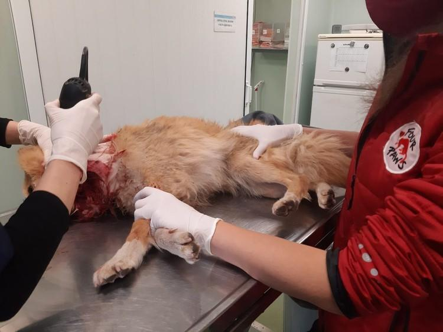
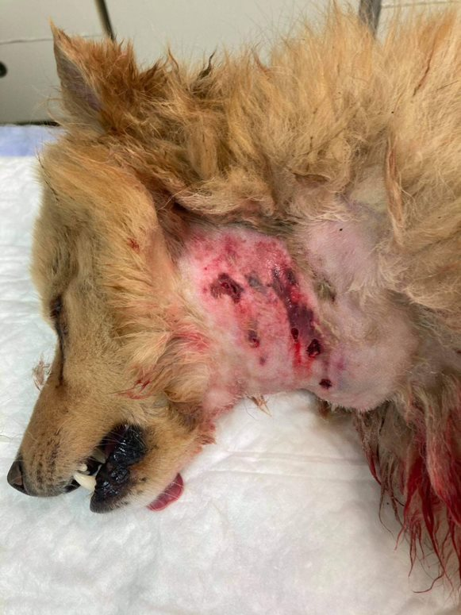

Life on the streets is cruel and brutal for stray dogs. They can be run over by a car, eat poison, be attacked by a cruel person or by their peers. All this leads to a slow, painful death. The same thing would have happened to Foxy if he hadn't come across people who noticed his serious condition and took him immediately to the clinic "Provet" to the Emergency Bank. After a long battle for his life, we managed to stabilize him. The dog has soft tissue swelling as a result of the injury. He is currently recovering from surgery and is on antibiotic and anti-inflammatory therapy. It is too early for optimistic forecasts, but it is never too late to ask for your help. Support Foxy's healing and recovery by donating here. Thanks to you we help hundreds of animals in need!
 